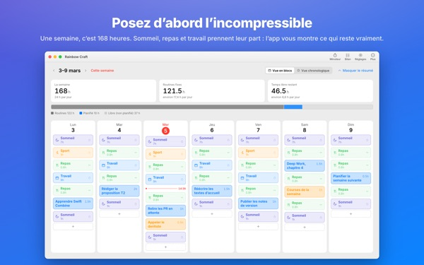
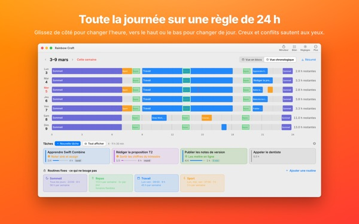
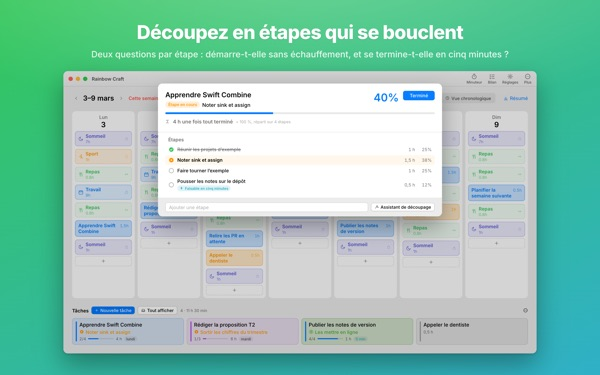
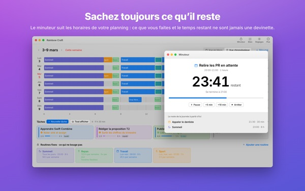
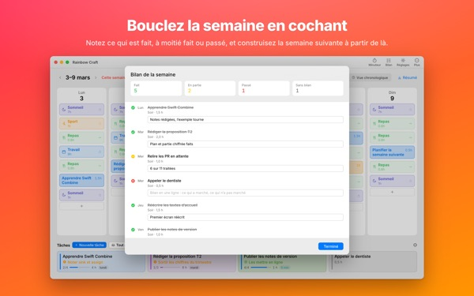

Tout tiendra vraiment
cette semaine ?
Rainbow Craft étale votre semaine par jour et par heure sur le Mac. Commencez par le temps incompressible, comme le sommeil, les repas et le travail, glissez vos tâches dans ce qui reste et voyez ce qui rentre vraiment.
Planification, routines, tâches, bilan, minuteur et import du calendrier sont gratuits.

Planifiez une semaine ici
Nous avons posé les quatre routines que l’app propose à la première ouverture. Activez-les ou non, puis déposez des tâches sur les jours.
La liste s’allonge. La semaine, jamais.
Une liste de tâches ne vous dit pas si votre semaine peut l’absorber. Une fois que le sommeil, les repas et les trajets ont pris leur part, il reste moins que prévu. Rainbow Craft affiche ces heures en chiffres et en cases, et vous laisse essayer chaque tâche dans un vrai créneau.
Une journée sur une règle de 24 heures
La vue chronologique étale la journée sur une règle de 24 heures. Les trous et les chevauchements sautent aux yeux, et vous choisissez comment s’agencent les éléments qui se superposent.
Récupérez réunions et rendez-vous depuis Calendrier sur le Mac au lieu de les saisir deux fois. Si vous voulez, vos plans peuvent aussi aller dans un calendrier Rainbow Craft séparé, visible sur l’iPhone. Vos autres calendriers ne sont jamais modifiés.

Découper les gros chantiers en étapes qui se terminent
Les gros chantiers calent quand quelque chose bloque encore. L’app pose deux questions pour chaque étape : pouvez-vous démarrer sans échauffement ? La finir en cinq minutes ?
Ce qui coche les deux est un fragment à saisir dès que cinq minutes se libèrent. Le reste demande du temps réservé. Si l’app se trompe, c’est vous qui tranchez.

Ce que vous faites, et combien de temps il reste
À l’heure de début, le plan passe en cours, et une fois le temps écoulé, l’app vous demande si c’est fini. Le minuteur suit votre emploi du temps.
Le widget Minuteur en cours affiche la tâche du moment et le temps restant sans ouvrir l’app.

Boucler la semaine avec une checklist
Le bilan de la semaine, c’est une carte par jour. Cochez ce qui est fait, à moitié fait ou sauté, et servez-vous-en pour la semaine suivante.
Avec le même compte iCloud, les tâches passent entre cette app et Rainbow of Desire sur iPhone : la journée planifiée sur le Mac vous suit dehors.

Trois étapes pour commencer
- 1
Posez les heures fixes
Ce qui revient chaque semaine, comme dormir, manger et travailler, devient une routine. L’app ne remplit rien à votre place.
- 2
Notez vos tâches
Une par ligne dans Tâches, en bas. Inutile de décider quand pour l’instant.
- 3
Glissez-les sur les jours
Déposée sur un jour, une tâche devient un plan. La date change ? Glissez-la sur un autre jour ou dans la liste.
Le calcul avec les routines proposées
- Une semaine
- 168 heures
- Sommeil · 8 h par jour
- 56 heures
- Repas · trois par jour
- 17,5 heures
- Travail · études · 9 h en semaine
- 45 heures
- Sport · 1 h lun., mer., ven.
- 3 heures
- Temps vraiment disponible cette semaine
- 46,5 heures
Ce ne sont que des suggestions. Choisissez et ajustez vos routines selon votre vie. Un jour de congé ou de déplacement, retirez le travail de ce jour-là seulement.
Tout ce qu’il faut pour vivre cette semaine est gratuit
Gratuit
- Plans de semaine et de journée, routines et tâches sans limite
- Vue chronologique et découpage en étapes
- Bilan de la semaine, copiable en texte
- Minuteur et widget Minuteur en cours
- Import du calendrier
- Synchronisation avec Rainbow of Desire sur iPhone
- Tendances des 2 dernières semaines
Plus · Pro
- Plus : 8 semaines de tendances, vos meilleurs jours et créneaux
- Plus : prévu et réel
- Plus : reprendre d’un coup le plan d’une bonne semaine
- Pro : tout Plus, et partager votre planning par lien en lecture seule
- Pro : un achat débloque aussi Pro dans l’app iPhone
Chaque formule en abonnement annuel ou en achat unique à vie
Les prix sont dans l’app et sur l’App Store. L’abonnement annuel se renouvelle automatiquement sauf résiliation au moins 24 heures avant la fin de la période. Pro acheté sur iPhone s’active aussi sur un Mac avec le même compte iCloud.
Questions fréquentes
Faut-il être connecté à iCloud ?
Pas si vous l’utilisez seulement sur le Mac. iCloud est nécessaire pour synchroniser avec l’iPhone et partager votre planning.
L’app modifie-t-elle mes calendriers ?
Jamais vos calendriers existants. L’import ne fait que lire ceux que vous choisissez. Si vous activez l’écriture des plans dans le calendrier Rainbow Craft, l’app crée ce calendrier séparé et n’écrit que là. Vous pouvez le supprimer à tout moment dans Calendrier.
Les tâches du Mac n’apparaissent pas sur l’iPhone.
Vérifiez que les deux appareils utilisent le même compte iCloud et que Rainbow of Desire est installée sur l’iPhone. La synchro passe par iCloud et peut prendre quelques minutes.
Fermer la fenêtre quitte-t-il l’app ?
Non. L’app reste ouverte. Rouvrez la fenêtre depuis le menu Fenêtre ou en cliquant sur l’icône du Dock.
Que deviennent mes tâches et plans après une mise à jour ?
Ils restent tels quels. Les mises à jour ne modifient ni ne suppriment ce que vous avez écrit.
Comment changer la langue de l’app ?
Choisissez-la tout en haut des Réglages, sous Language · 언어 · 語言, et l’app se rouvre dans cette langue. 23 langues sont disponibles. Les noms de routines et les tâches saisis par vous ne sont pas traduits.
Nouveau Mac, et Plus ou Pro a disparu.
Connectez-vous avec le même compte Apple, puis cliquez sur Restaurer l’achat dans les Réglages. Pour résilier, passez par les réglages de votre compte dans l’App Store.
Où est stocké ce que j’écris ?
Pas de compte, pas d’inscription, pas de serveur du développeur qui garde vos plans. Ce que vous écrivez reste sur vos appareils et dans votre propre iCloud. L’app envoie des statistiques d’utilisation anonymes sans votre contenu, désactivables dans les Réglages avec Envoyer des statistiques d’utilisation anonymes.
Bloqué ou quelque chose cloche ? Écrivez à mizzking75@gmail.com. Les Réglages de l’app ont aussi une rubrique contact.